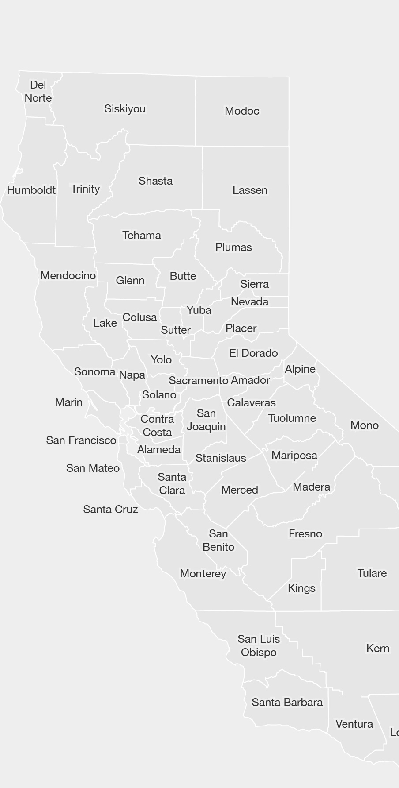
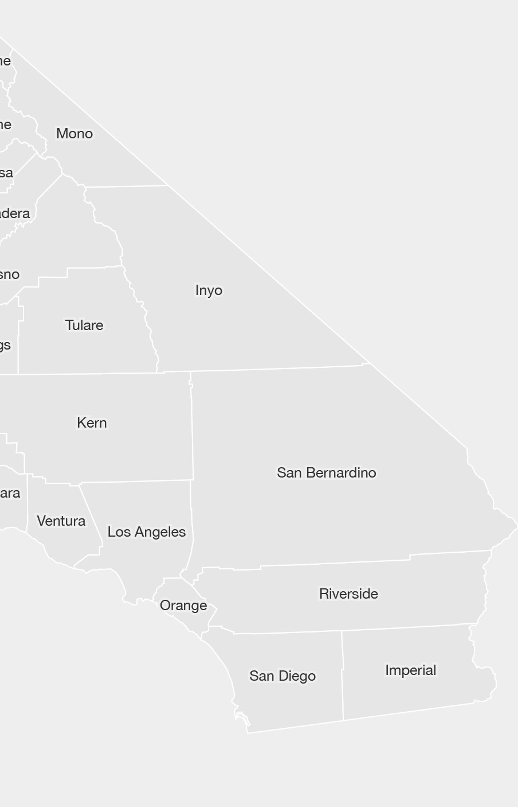

A cartogram series by
Jake Coolidge
What is a cartogram?
A cartogram is a thematic map that is "drawn so that the areas of internal enumeration units are proportional to the data they represent".1
This cartogram series uses the county as the enumeration unit, and resizes them relative to other counties to show population patterns across the state of California. At a glance it should be clear that population is not evenly distributed across the state. Perhaps more striking is the temporal dimension to California's population growth. Select from six years, spaced 20 years apart, to view the state's growth over the twentieth century. A discussion to accompany each selection will appear at the top of this column. The sizing of the county polygons remains consistent across throughout the visualization, for example allowing the magnitude of San Francisco's population in 1900 to be compared to the Sacramento's 1980 population.
This is a semi-contiguous cartogram. Due to the fact that some counties with large land areas have very small populations, some small counties have large populations, and a wide range in between, some shearing is inevitable as the counties are resized according to population.
This is how the counties appear when mapped normally (Albers projection):
 Population data was acquired from the US Census Bureau.7 Check out the readme on GitHub to learn more about how the cartogram artwork was created.
This work marks the ten-year anniversary of one of my earliest grad-school projects, reimagining and redesigning it along the way. See the original work here.
Number of persons